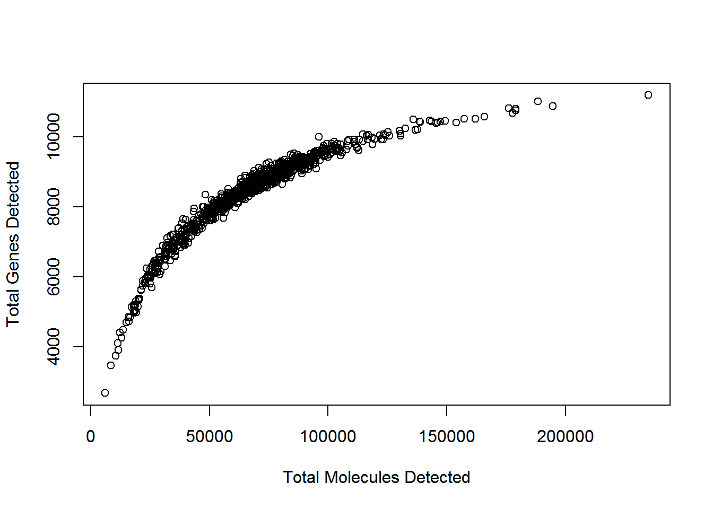

4 构建表达矩阵
很多scRNA-seq数据分析从表达矩阵为开始。 一般来说，表达矩阵的每一行代表一个基因，每列代表一个细胞（但是一些作者会使用转置）。 每个条目代表特定基因在特定细胞的表达水平。表达量的单位取决于protocol和标准化方法。
4.1 质量控制
scRNA-seq实验测序结果是大量的cDNA reads。第一步是确保测序的高质量，可以使用以下标准工具执行质量控制，例如 FastQC 或 Kraken.
假设有experiment.bam文件,运行以下FASTQC命令
$<path_to_fastQC>/fastQC experiment.bam下面是125 bp reads数据集的FastQC输出结果示例。下图显示了由于技术错误导致在read中心无法正确测序几个碱基。 但是，由于read的其余部分质量很高，因此该错误很可能对比对效率的影响可以忽略不计。
Figure 4.1: Example of FastQC output
另外，使用Integrative Genomics Browser (IGV)或者SeqMonk对数据进行可视化非常有帮助。
4.2 Reads 比对
将reads低质量碱基取出后，把剩下的序列比对到参考基因组上。同样，没有专门为scRNA-seq设计的比对方法。我们可以使用STAR或者TopHat进行比对。对来自有丰富注释信息模式生物(比如小鼠和人)的大型全长转录本数据集，pseudo-alignment方法(比如Kallisto，Salmon)可能比传统比对方法表现更好。基于drop-seq数据集包含数十万reads，pseudoaligners运行时间比传统比对工具快不止一个量级。
使用STAR比对示例
$<path_to_STAR>/STAR --runThreadN 1 --runMode alignReads
--readFilesIn reads1.fq.gz reads2.fq.gz --readFilesCommand zcat --genomeDir <path>
--parametersFiles FileOfMoreParameters.txt --outFileNamePrefix <outpath>/output注意, 如果使用了spike-ins, 在比对前应将spike-ins的DNA序列添加到参考基因组序列中.
注意, 当使用UMIs，应该从read序列中取出条形码序列。通常做法是将barcode加到read名称上。
一旦将每个细胞的reads比对到参考基因组，我们需要确保每个细胞有足够数量的read比对到参考基因组。 根据我们的经验，小鼠或人类细胞的reads的map率为60-70％。但是此结果可能会因protocols，read长度和read比对工具参数而异。一般来说，我们希望所有细胞都具有相似的map率，因此应检查并可能删除任何异常值，map率低通常表示污染。
使用Salmon定量基因表达：
$<path_to_Salmon>/salmon quant -i salmon_transcript_index -1 reads1.fq.gz -2 reads2.fq.gz -p #threads -l A -g genome.gtf --seqBias --gcBias --posBias注意：Salmon或得到估计read counts和估计transcripts per million(tpm), TMP对scRNA-seq长基因的表达进行了过度校正，因此我们建议使用read counts。
4.3 比对示例
下列直方图显示scRNA-seq实验每个细胞比对reads总数。每个条形代表一个细胞，按照每个细胞的总reads数升序排列。三个红色箭头表示比对覆盖率降低的异常细胞，应该在后续分析中将其去除。黄色箭头表示unmapped reads较多的细胞。在比对质控步骤我们保留这两个细胞，但是在细胞质控时由于高的核糖体RNA reads比例将其移除。

Figure 4.2: Example of the total number of reads mapped to each cell.
4.4 Mapping QC
将原始测序数据比对到基因组后，需要评估比对的质量。目前有很多方法对比对质量进行评估，包括：rRNA/tRNAs reads数目，uniquely mapping reads比例，跨剪切位点的reads数，转录本read深度。为bulk RNA-seq开发的方法，比如RSeQC也适合单细胞数据：
python <RSeQCpath>/geneBody_coverage.py -i input.bam -r genome.bed -o output.txt
python <RSeQCpath>/bam_stat.py -i input.bam -r genome.bed -o output.txt
python <RSeQCpath>/split_bam.py -i input.bam -r rRNAmask.bed -o output.txt然而预期结果依赖于实验protocol，比如很多scRNA-seq方法是用poly-A富集来排除rRNA，但导致read覆盖率具有3’偏好性，即基因的3’区域更容易被检测到。下图展示了测序reads的3’偏好性，以及3个从数据集中移除的异常细胞。
Figure 4.3: Example of the 3’ bias in the read coverage.
4.5 Reads定量
下一步是定量每个细胞的基因表达水平。对于mRNA数据，可以使用针对bulk RNA-seq开发的工具，比如HT-seq 或者FeatureCounts
# include multimapping
<featureCounts_path>/featureCounts -O -M -Q 30 -p -a genome.gtf -o outputfile input.bam
# exclude multimapping
<featureCounts_path>/featureCounts -Q 30 -p -a genome.gtf -o outputfile input.bamUnique molecular identifiers (UMIs) 使得计算分子的绝对数目成为可能，并且在scRNA-seq非常受欢迎。下一章将讨论如何处理UMIs。
4.6 唯一分子标识符
感谢来 EMBL Monterotondo的Andreas Buness在本节的合作。
4.6.1 UMI介绍
UMI是在反转录过程中添加到转录本中的短（4-10bp）随机条形码序列。它们使测序read能够对应到单个转录物，从而去除scRNA-Seq数据扩增噪声和偏差。

Figure 4.4: UMI sequencing protocol
当对包含UMI数据测序时，仅对包含UMI的转录本末端进行测序（通常是3’末端）
4.6.2 比对条形码序列
由于条形码数量(\(4^N\),\(N\)为UMI的长度)比细胞中RNA分子(~\(10^6\))数目多，每个barcode通常会连接多个转录本。因此需要barcode和转录本比对位置来鉴定转录本分子。第一步比对UMI reads，推荐使用STAR，因为其运行速度快并且输出高质量BAM比对。此外，比对位置对鉴定转录本新的3’UTR很有帮助。
UMI测序通常由双端reads组成，其中一端read捕获细胞和UMI条形码，然后另一端read包含转录本的外显子序列(Figure 4.5)。注意：推荐移除reads中poly-A序列避免比对到基因/转录本内部的poly-A/poly-T序列而产生错误。
处理完UMI实验的reads后，通常有以下惯例：
UMI加到另外一个配对read的序列名称中
reads按照cell barcode归类到不同的文件，对特别大，测序深度浅的数据集，cell barcode加到read名称中以减少文件数量。
Figure 4.5: UMI测序reads, 红色闪电代表不同片段的文职
4.6.3 Barcodes计数
理论上，每个唯一的UMI-转录本对应该对应来自一个RNA分子的所有reads，然而实际情况并非如此，常见原因如下：
不同UMI不一定表示为不同的分子，由于PCR或测序错误，碱基对替换事件可产生新的UMI序列。 较长的UMI碱基替换的可能性更高。根据cell barcode测序误差估计，7-10％的10bp UMI至少会包含一个错误。如果没有纠正错误，将导致高估转录本的数量。
不同转录本不一定是不同分子，比对错误，或者multimapping reads可能导致某些UMI对应到错误的基因/转录本，这种类型的错误也会导致高估转录本的数量。
相同的UMI不一定是相同分子，UMI频率和短UMI可导致相同UMI连接到相同基因的不同mRNA分子。因此，将导致低估转录本数量。

Figure 4.6: UMIs中可能错误
4.6.4 错误校正
如何最好地解释UMI中的错误仍然是一个活跃的研究领域。我们认为解决上述问题的最佳方法是：
UMI-tools 使用directional-adjacency方法，同时考虑错配数目和相似UMIs相对频率来识别可能的PCR/测序错误。
目前问题还没完全解决，通过删除很少reads支持的UMI-转录本对，或者移除multi-mapping reads可以减轻该问题。
简单饱和校正 (又称 “collision probability”) Grun, Kester and van Oudenaarden (2014) 估计真实的分子数目 \(M\):
\[M \approx -N*log(1 - \frac{n}{N})\] 其中N=唯一UMI barcode的总数，n=观测barcode数目
该方法的一个重要缺陷是其假设所有UMI出现频率相同。大多数情况下并不是，因为GC含量不同引入偏差。

Figure 4.7: 基因扩增效率
如何最好地处理和使用UMI目前是生物信息学界的一个活跃的研究领域。最近开发的几种方法，包括：
4.6.5 下游分析
目前UMI平台(DropSeq, InDrop, ICell8)捕获效率从低到高差异很大，如下图所示。
Figure 4.8: 捕获效率差异
这种差异引入强烈的偏差，需要在下游分析中考虑。最近的分析通常基于细胞类型或生物通路吧细胞/基因混合在一起增强检测能力。对这些数据的稳健统计分析仍然是一个开放的研究问题，还有待确定如何最好地调整偏差。
练习1 现提供三个不同来源的诱导多功能干细胞UMI counts和read counts数据 (Tung et al. 2017) (查看章节 7.1 获得更多关于此数据集的信息)
umi_counts <- read.table("data/tung/molecules.txt", sep = "\t")
read_counts <- read.table("data/tung/reads.txt", sep = "\t")使用该数据:
绘制捕获效率可变性
确定扩增率：每个UMI的平均reads数目 Determine the amplification rate: average number of reads per UMI.
答案1
# Exercise 1
# Part 1
plot(colSums(umi_counts), colSums(umi_counts > 0), xlab="Total Molecules Detected", ylab="Total Genes Detected")
# Part 2
amp_rate <- sum(read_counts)/sum(umi_counts)
amp_rate
## [1] 30.87586References
Tung, Po-Yuan, John D. Blischak, Chiaowen Joyce Hsiao, David A. Knowles, Jonathan E. Burnett, Jonathan K. Pritchard, and Yoav Gilad. 2017. “Batch Effects and the Effective Design of Single-Cell Gene Expression Studies.” Sci. Rep. 7 (January): 39921. https://doi.org/10.1038/srep39921.